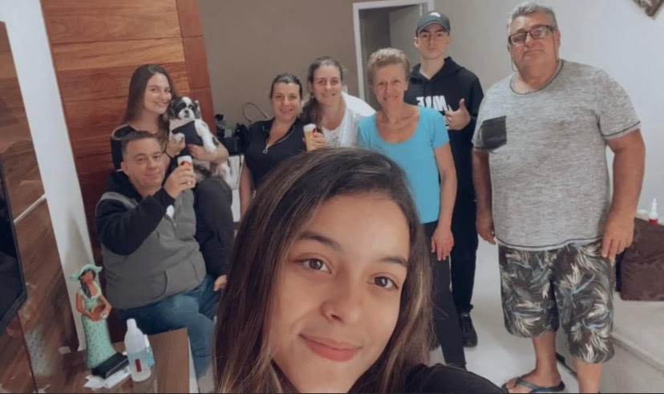
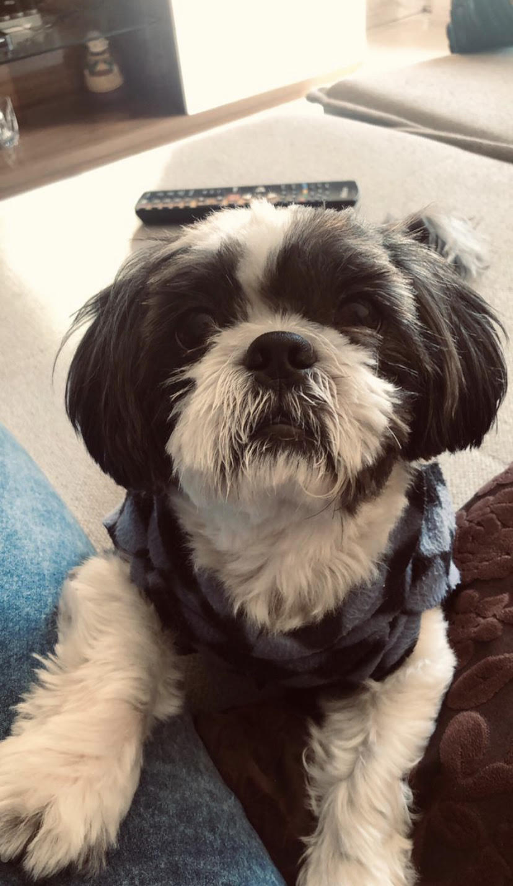

Oii rafafiasss!!!
Meu nome é Rafaela mas prefiro que me chamem de rafaa
Meu aniversário é dia 19 de outubro e sou librianaa. Pensa em uma pessoa indecisa! pensou? sou euuu...acho que é por conta do meu signo. sofro dms com minhas indecisões. além disso, meu ascendente é em escorpião. o que podemos concluir com isso? bom, já sabemos que sou uma pessoa um pouco difícil de lidar hahaahhaha
Meus amigos falam que as vezes sou estressada e grossa, que no caso não é mentira kkkkkk mas eu juro que sou muito legal, parceira e amiga
Eu amo ajudar e dar conselhos para quem precisa. Sou tímida mas quando eu pego intimidadeee, meu amorrr, vc conhece uma nova pessoa
Sou um pouquinho desorganizada hahahaha
Meu ponto fraco é chocolate!!!!! jurooo, qualquer tipo eu amo. na verdade eu não vivo sem.
Eu amo ficar com minha família!!!
Como eu falei, eu amo ficar com minha família. Mas antes vou dar uma explicada:
Meus pais são separados e eu moro com minha mãe, mas a cada 15 dias eu vou passar alguns dias no meu pai.
Primeiro vou falar da parte da minha mãe... a gente ama uma festa, um churrasco e uma música no último volume (obs: nenhum vizinho gosta da gente por causa dos barulhos kkkkk). Somos uma família muito unida e barraqueira rs. Estar com eles é um dos melhores momentos
Sobre a familia do meu pai... bom, eu tenho uma irmã de 3 aninhos e ela me mostrou o que é amor de imãos. Eu sempre brinco com ela
Meu dia a dia é sempre o mesmo. Eu vou para a escola, faço as lições e no meu tempo livre eu:
-durmo kkkkkk
-assisto série, que para ser sincera algumas eu tenho preguiça de terminar, e por isso prefiro filme
-escuto sertanejo.... eu amo sofrência. já tive relacionamentos? não! mas sofro como se já hahaha
-fico com meu cachorro
ele tem cara de ser bonzinho mas é um pouco bravokkkkk. sempre que chega visita em casa ele quer morder
Basicamente é isso...
Eu sou do tipo de pessoa que tem o sonho de viajar para vários lugares. Se fosse para escolher só um tipo de lugar para ir, com certeza seria: PRAIA.
Praia e verão são duas combinções perfeitas e que eu amo muito. Sinto que na praia é um momento de esquecer os problemas e relaxar.
A que eu sempre vou é a Praia Grande porque temos casa lá.Mas eu já fui para o nordeste que só tem praias lindas.... vou colocar algumas fotos